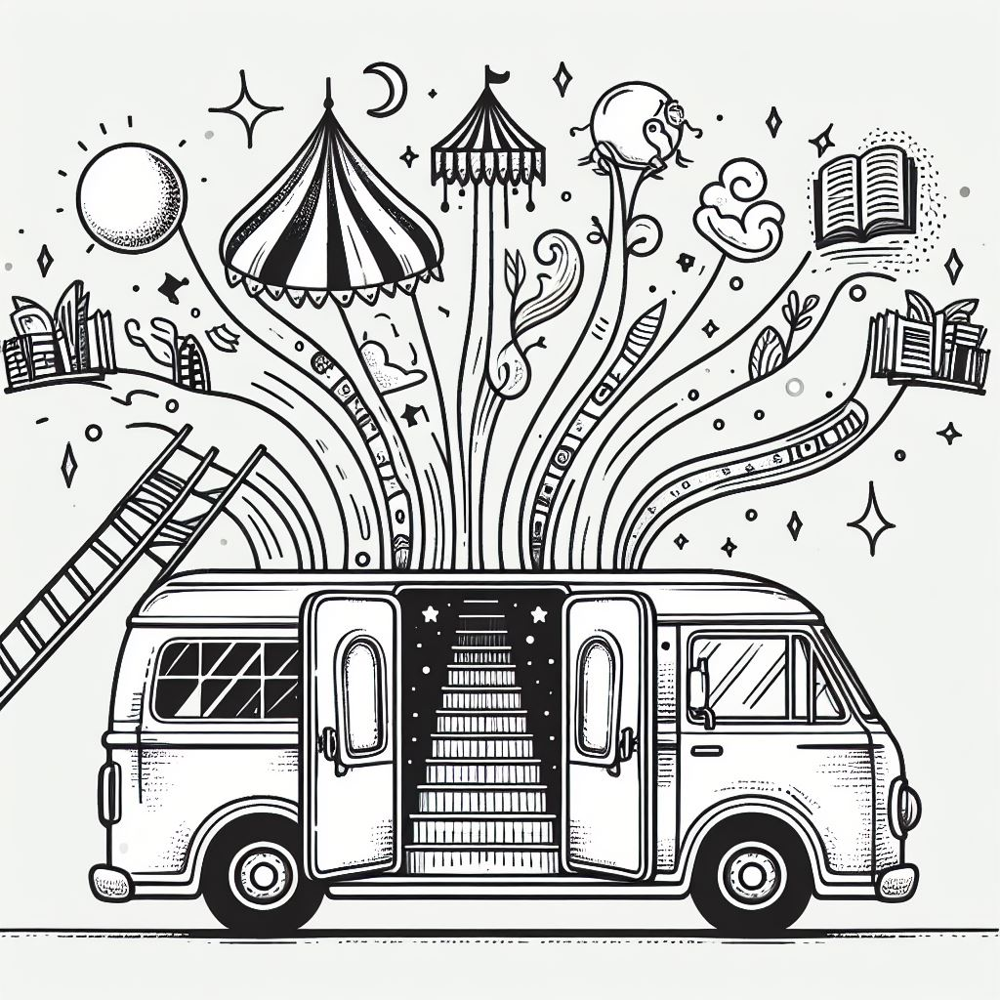

THIS PAGE IS A WORK IN PROGRESS
Caravanarchy
We are a traveling intentional agorist community
whose objective is to create the best of all
possible worlds. Some of our our strategies
include:
-
Deploying agorist businesses outside of and
adjacent to major cities
-
Establishing gatherings and festivals
focused on discussing our philosophy
-
Engaging with all we meet in strategic
lifestyle planning
We choose to be a caravan because we fulfill
several specific needs amongst stationary
communities:
-
The need to network with other communities,
sharing information and resources
-
The need to find a larger market in which to
sell agorist goods and services
-
The need for growth of the community through
acquisition of vetted newcomers to the
community
Because of these needs, we are creating a caravan
that will operate in perpetuity. Our functions
might change and evolve, but there will always be
a place for us in the ecosystem of the larger
networks we are serving.
This is not an isolated strategy. The ideal is for
more caravans to take on this model and make it
their own. We are publishing this information so
that anyone can use this as a model to create
their own caravan or community. We simply ask that
you create a strategy that makes the whole world
more free, not just your own little bubble of
existence.
Those who have no bills are among the most
wealthy of all, because they bask in an
abundance of time.
When we decided to leave the binds of the
debt-based 9-5 lifestyle, we gained access to an
invaluable resource: our time. Instead of using
our life energy to support another person's dreams
and deadlines, we are able to take back our
autonomy and build the life that most fulfills and
empowers us.
With this newfound abundance, we are creating a
healthy relationship to our time and helping
others regain access to their time.
There is a concept that people who live in houses
tend to have. This concept is that in order to
establish roots in a community, one must settle
down in a singular location where in time, they
will make close friends and build or find
community. This is one strategy, but is not
necessarily the best strategy to make lasting
bonds with others who share the same goals. For
example, how often do your neighbors share your
exact views? How often do people move to your town
who share your goals? Caravanarchy is a way of
establishing a team of individuals who share the
common objective of making the world more free for
themselves wherever they are while maximizing
freedom for the individual and growing one's
network, team, or communities (yes, road life WILL
expose you to multiple communities of people) by
offering a superior alternative to the
statist-quo.
Why We Are Nomads
Our choice to be travelers is not based off of a
desire to be social. We are not searching for
meaning or a soulmate. We have many direct reasons
why we will choose to remain nomadic for the
foreseeable future. Some of these reasons include
the role we fill in society. Nomads provide a
source of new information and make connections
with people wherever they go.

Nomads can be couriers of objects and goods. They
can transport people from place to place,
providing them lodging on the way there. Nomads
can create events everywhere they go and collect
unique items to share with others.
Both
network hosts
(accepting new members to be vetted for further
network involvement) and
welcome outpost,
the caravan blends these capabilities while
retaining wings focused on outreach, protection,
and whatever other topics the current team cares
about. Shelter/Housing can be brought or provided
by the caravan in a win/win exchange.
The caravan is the current primary creator of
abundance loops within the network. But we are not
the network in itself. We are network support. Our
network is designed to protect ourselves and
others by having backup networks in multiple
states.
We hold a marketplace everywhere we go. Festivals
for up to a month duration anywhere we park. The
properties we support are those who are structured
on unanimous consent.
We go to a city. We set up a temporary camp
on the outskirts of that city. We draw
people in and give them tools to connect
with people from their own lives as well as
new friends with similar goals.
We are peddling voluntaryism, not labor. We do
talks and discussions. And we have the vision to
create the lore. We are the bards.
The Workshop is a separate and complimentary
gathering within the voluntarism outreach team
that consists of people who teach certain skills
and travel around or stay in one place offering
information.
-
Outreach - go forth and form new voluntarist
communities
-
Information - Cultivate and make available
voluntaryist information and art
-
Culture - Create festivals, stories, and
voluntaryist media. Seminars wherever we go,
creating communities wherever we go.
We offer a place for everyone to go and, if they
see it necessary, for them to never return to
their old lives. Whether they want to learn a
trade in an Guild, start their own business, or
just live free on land arbitrated by no ruler. The
free land we have will build itself up with the
hands of people who know their labor is going
towards something that will support them in the
future.
We will meet up with people in different cities to
start new festivals. We spend a month in an area
at a time, where the caravan can recoup and secure
gas money for the next destination. The main
caravan will focus on a new location vs an older
location but yearly festivals will persist and
other caravans will go wherever they please.
We retain a unique perspective based on our
exposure to a diverse demographic of communities.
We are historians and philosophers with a large
sphere of influence. We do not need donations
nearly as much as we need people on the ground.
But donations will go towards a network that will
provide for every one of us in the ways we want
and need from our community.
Core Principles:
-
All interactions/exchanges are net positive -
win/win
- Everyone agrees to the NAP
-
For all, we support movement throughout Guilds
to find their true passion.
- Self-Reliance
We will go to an area for a month or more at a
time and during that time we will focus on forming
a group capable of continuing the Voluntary
Welcome Hub and Freedom Hub full-time. We will
also focus on setting up recurring meetups and a
festival that can help bring people into the
network. We will have a constant presence during
that time. Shelter/Housing can be brought or
provided by those in the area, if not found on BLM
lands.
You will wake up every day knowing where the
central caravan location is. That location is
somewhere where you can meet people, craft, and
trade. Sometimes there is no main camp and the
people in the caravan do outreach in the town
because there is not a central meeting location
possible. In this case, the caravan will be
centered around a certain known friendly location.
In this way, each vehicle in the caravan can be
stationed in its most strategic location and the
center of the caravan does not depend on the
presence of any one vehicle at that location. That
location becomes a welcome hub location and
anarchists at that location can provide welcome
hub services.
- Performers
- Merchants
- Craftspeople
- Problem Solvers
- Cafe or Food Makers
- Writers
- Bounty Fillers
- Mechanics
The main location for the caravan will be where
the Nightly Presentment takes place. People can
always park wherever they wish, near or far. There
will be a separate silent area designated for
those who wish to camp quietly and visit the
offerings from farther away.
We have a system for saving people from the
cities
At the time of this writing, we (CaravAnarchy)
have a converted short-bus (skoolie), a 35 ft 5th
wheel, a car, and an extended van with a bed built
out.
The idea is to help everyone who is having trouble
redirecting their income stream and expenditures
to purely agorist sources - so that we can keep
the wealth in the family and grow a system that
will stand resolute against all threats. Our
caravan is growing - and with it sprouts new
spaces for people who don’t yet have a
vehicle to sleep in of their own. Everywhere we
go, we have a huge camp offering and tables set up
inviting folks to learn about the opportunities
available in this ever-growing agorist network.
In addition, we invest the wealth we have, after
taking care of our basic needs, into obtaining the
infrastructure and tools necessary to sustain
multiple agorist businesses on-the-go. For
example, we can provide the tools necessary to run
a pizzeria, burger bar, ice cream stand, bakery,
pie-cobbler stand, and tools to help support other
types of businesses. These businesses can be
lucrative depending on the market conditions.
We are here for you. Do you have a way to protect
yourself? Need to get away or need another house?
We’ll provide the details you provide the
specs - let's all be more sure about what we're
gonna get.
Bounties are like wanted ads. You can ask people
for things they want and add them to the bounty
board. You may then complete these bounties or
pick up bounties that already exist on the board.
There are different tiers of positions in the
caravan. There are temporary travelers and there
are full-time crew. You are welcome to create your
ideal interaction. Every position is a win-win
relationship. The basic position is a traveler.
Travelers pay for their own gas and insurance on
their own vehicle or a vehicle in the fleet they
are renting. Rental vehicles also have a charge
for paperwork and another for wear and tear. There
will be many positions available.
If you come on our caravan, you will get these
great benefits:
-
You will wake up every day knowing where the
central caravan location is.
-
The central location is where you can meet
people, craft and trade, and more.
Rarely, there is no central location and the
people in the caravan do outreach in the town. In
this case, the caravan main camp will be centered
around aknown friendly location.
You don’t need to become a nomad -
it’s just highly suggested to take some time
decompressing from the stressors of your life.
This can be done either on the road or at a
stationary location.
Many needs are fulfilled by our caravan. The point
is not only to have people coming along with us
but to connect people with things they need. We
can use our boon to share with others what we have
in excess.
On vacation, you are always going back to where
you came from. If you don’t end up rushing,
you still miss out on all the things you didn't
have time for. You budgeted your time.
- Authentic Relating
- Spirituality
- Teaching
- Mechanics
- Food Growing
- Food Storage
- Artists / Musicians
- Writers
- Technology
- Web Design
Core Caravan Team
This is a list of roles that need to be filled in
the caravan. By taking on one of these roles, you
can earn your place as a full-time member. The
benefits of being full time are discussed below
the member overview chart.
Caravan Coordination Crew:
- Caravan Needs
- Events Coordinator
-
Mechanic/Mechanic’s Rep for Caravan
Vehicles
- Caravan Security
-
Emergency Preparedness Guild Representative
- Mobile Armed Militia Guild Operative
- Other Guild Representative
Movement Crew:
- Non-Event Private Locations Scout
- Outdoor Locations Scout
- Trade and Barter / Bounty Finding
- Outreach Representative
Media Crew:
- Newsletter Creation
- Bounty Board Upkeep
- Multilevel Privacy Map Upkeep
Caravan Inner Health Crew:
- Caravan Member Recruitment
- Caravan Roles
- Caravan Member Wellness
- Inner Caravan Errand Driver
Outreach Crew:
- Caravan Camp + Cafe
- Performers, Speakers, DJs
- Other Caravan Talent
- Game Night (connection games)
- Other “Nights”
- Dating Section
Caravan Coordination Crew:
- Caravan Needs
- Events Coordinator
-
Mechanic/Mechanic’s Rep for Caravan
Vehicles
- Caravan Security
-
Emergency Preparedness Guild Representative
- Mobile Armed Militia Guild Operative
- Other Guild Representative
Movement Crew:
The movement crew consists of people inside fo the
caravan who care about the caravan and have input
pertinent to the next location and the timing of
the movement of the caravan. The caravan
doesn’t move until they reach a
consensus.
- Trade and Barter / Bounty Finding
- Outdoor Locations Scout
- Non-Event Private Locations Scout
- Outreach Representative
Media Crew:
Newsletter Creation
Maintain and update any number of media
sources to spread knowledge to people. Spread
the word of the newsletter.
Bounty Board Upkeep
Help us find bounties on the road, and direct
where the caravan will go next. We will follow
the wisdom of the Movement Crew, but you can
take trips near and far to meet bounties if
the caravan is not going in the direction you
find perfect.
Multilevel Privacy Map Upkeep
Help expand the community’s multi-level
privacy map. Add places, get places
established, and provide services to
locations
Caravan Inner Health Crew:
A group of people who help the caravan by keeping
track of the needs of the caravan
- Caravan Member Recruitment
- Caravan Roles
- Caravan Member Wellness
- Inner Caravan Errand Driver
Outreach Crew:
- Caravan Camp + Cafe
- Performers, Speakers, DJs
- Other Caravan Talent
- Game Night (connection games)
- Other “Nights”
- Dating Section
Extra Skillset: (choose at least one to develop)
- Defense
- Medical
- Media
- Big Rig Driver
- Fleet Maintenance
- Member Support
- Technical Support
Other Opportunities: (not necessary if paying gas)
- Locations Scout
- Rideshare/Package/Vehicle Delivery
- Traveling Merchant
- Mechanic / Mobile Mechanic
- Contractor/Consultant
- Transitional Members
-
Individuals seeking a non-caravan
position/permanent location
Transitional Members
Individuals seeking a non-caravan
position/permanent location.
|
Role
|
Term
|
Income
|
Charity Flow
|
Ideals
|
Requires Skillset
|
|
Caravan
|
Personal
|
|
Core Team
|
Long
|
Positive
|
Positive
|
Inwards
|
Outwards
|
Yes
|
|
Transitional
|
Long/Short
|
Either
|
Either
|
Outwards
|
Inwards
|
Yes
|
|
Emergency Support
|
Short
|
Either
|
Negative
|
Outwards
|
Inwards
|
No
|
|
Rideshare
|
Very short
|
Positive
|
Negative
|
Outwards
|
Inwards
|
No
|
|
Guild Ambassadors
|
Variable
|
Either
|
Either
|
Outwards
|
No
|
…
Income:
….
Charity Flow:
…
Ideals:
….
Bus ideas to help people, not yet created:
-
Water Bus: Washing machine, Shower, sauna,
plants growing.
-
Electro-Bus: Charging stations, wifi, sound
system, lights, entertainment, and
appliances.
- Demo Bus: Construction tools, storage
- Art Bus: Woodworking, wire wrapping
- Music Bus: Recording studio, writing.
-
Skill Delivery Bus: Give rides to skilled
voluntaryists
- Rideshare Bus
- Tarot Bus
-
Healing Bus: Sound healing, massage,
astrology, etc.
|
Vehicle
|
Main Feature
|
MPG
|
Storage
|
Living
|
Extras
|
|
18 wheeler
|
Big Haul
|
10
|
Huge
|
Y
|
Reefer Trailer
|
|
Bus
|
Our Room + Solar
|
12
|
Extra Large
|
Y
|
|
Large Truck
|
Towing
|
19
|
Medium
|
Y/N
|
Haul Fifth Wheel
|
|
Van
|
Grow plants
|
19
|
Medium
|
Y
|
|
Med Truck
|
Hauling fuel
|
19
|
Large
|
Y/N
|
Camper + Fuel Trailer
|
|
Fifth Wheel
|
Cafe + Grow Room
|
N/A
|
Extra Large
|
Y
|
|
Camper
|
Kitchen + Bed
|
N/A
|
Large
|
Y
|
|
Car
|
MPG Spaceship
|
40
|
Small
|
N
|
|
Your Vehicle
|
Extra Rides
|
?
|
?
|
?
|
Emergency trips
|